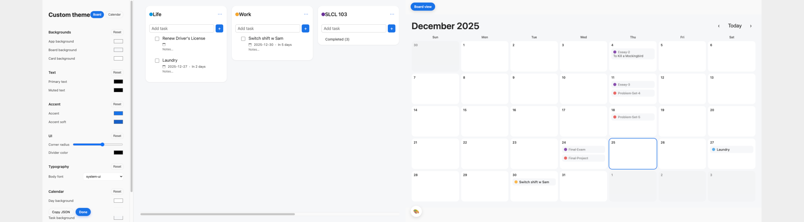
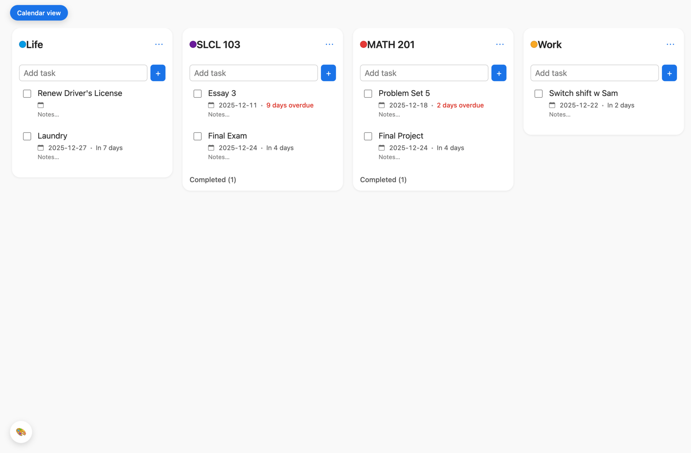

Case study
To Do List.
A dual-view task management system designed to support multiple mental models of work and user autonomy

At a Glance
- Built a single task system that supports both Kanban and Calendar views without duplicating data
- Designed for users who switch between spatial, temporal, and unstructured ways of thinking
- Treats visual design and theming as a core interaction, not a cosmetic afterthought
- Explores how interface flexibility can reduce cognitive friction and support self-regulation
What This Is (and Why It Exists)
Most productivity tools implicitly assume a single, “correct” way of organizing work. Some privilege lists. Others privilege calendars. Many assume productivity is linear, tidy, and emotionally neutral.
That assumption breaks down quickly in real use. People shift how they think about tasks depending on time pressure, emotional state, uncertainty, and workload. Forcing users into a single representation can increase friction, overwhelm, and disengagement.
To Do List. began as a personal prototyping project to explore what happens when a task system adapts to users’ mental models instead of prescribing one. The core idea is simple: the same underlying tasks should be legible through different lenses, without requiring users to restructure their work each time their thinking changes.
Process & Iteration Approach
This project followed a prototype-first design process. Rather than progressing through static wireframes and mockups, I built a working interface early and used live interaction to explore design tradeoffs in real time.
1. Conceptual Framing
- Identified breakdowns in existing productivity models
- Focused on mental model shifts, emotional load, and autonomy
- Defined flexibility as a first-class design constraint
2. Working Prototype (Early)
- Built a functional Kanban + Calendar system immediately
- Designed directly in code rather than static mockups
- Used real interactions to surface design tradeoffs
3. Interaction Testing & Self-Use
- Used the system in real task contexts
- Observed friction, overload, and breakdown points
- Evaluated mental effort across views and themes
4. Refinement Inside the Live System
- Iterated on layout, affordances, and transitions
- Adjusted theming controls based on perceived effort
- Treated the prototype as both design artifact and testbed
Core Views
Kanban Board View
- Multiple lists with drag-and-drop tasks
- Supports spatial reasoning and visual grouping
- Optimized for ambiguous, ongoing, or loosely defined work
- Encourages cognitive offloading through spatial arrangement
Calendar View
- Tasks mapped onto time by due date
- Makes urgency, overload, and gaps immediately visible
- Supports planning, prioritization, and reality checks
- Same data, different cognitive framing

This design choice preserves continuity while allowing users to choose the mental model that best fits their current state.
Themes as a Functional Feature
Many productivity tools treat aesthetics as neutral or purely decorative. This project explicitly rejects that assumption. Visual design affects perceived effort, emotional load, and willingness to engage with difficult tasks.
To Do List. treats themes as a form of interaction design. Users can switch visual styles depending on mood, energy, or the kind of pressure they need: soft and calming on some days, high-contrast and demanding on others.
DIY Theme Editor
The app includes a built-in theme editor that gives users direct control over the interface without exposing raw CSS or risking breakage. The goal is expressive customization that preserves usability and structural integrity.
- Fully customizable themes
- Control over:
- colors
- fonts
- spacing
- borders
- calendar-specific surfaces
- Live preview in both board and calendar views
- Section-level reset and JSON export for portability
Inspired by MySpace / Tumblr CSS and AO3 skins, but designed to be approachable and safe. The editor emphasizes user agency without demanding technical expertise.
Design Philosophy
This project is intentionally opinionated. It assumes that productivity is emotional, that cognitive load fluctuates, and that tools should adapt to users rather than disciplining them into a single workflow.
- User autonomy: users choose how tasks are represented
- Empathy-driven design: supports overwhelmed, non-linear work patterns
- Low decision friction: no forced restructuring when switching views
- Aesthetic agency: visual design as a lever for motivation and regulation
Key Takeaway
To Do List. is not about optimizing productivity metrics. It is an exploration of how interface flexibility, aesthetic control, and multiple mental models can support user autonomy and reduce friction in everyday task management.
It complements my broader research agenda by treating working UI as the starting point for understanding behavior—using concrete design decisions to study how people think, choose, and cope in interactive systems.
View Github Repo & Prototype